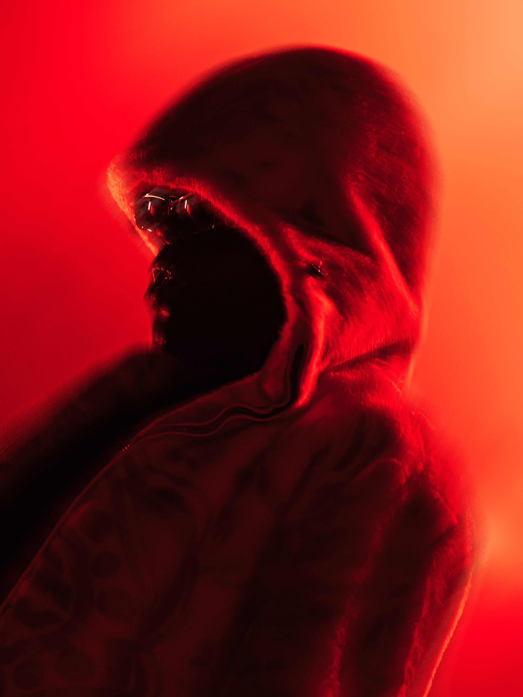
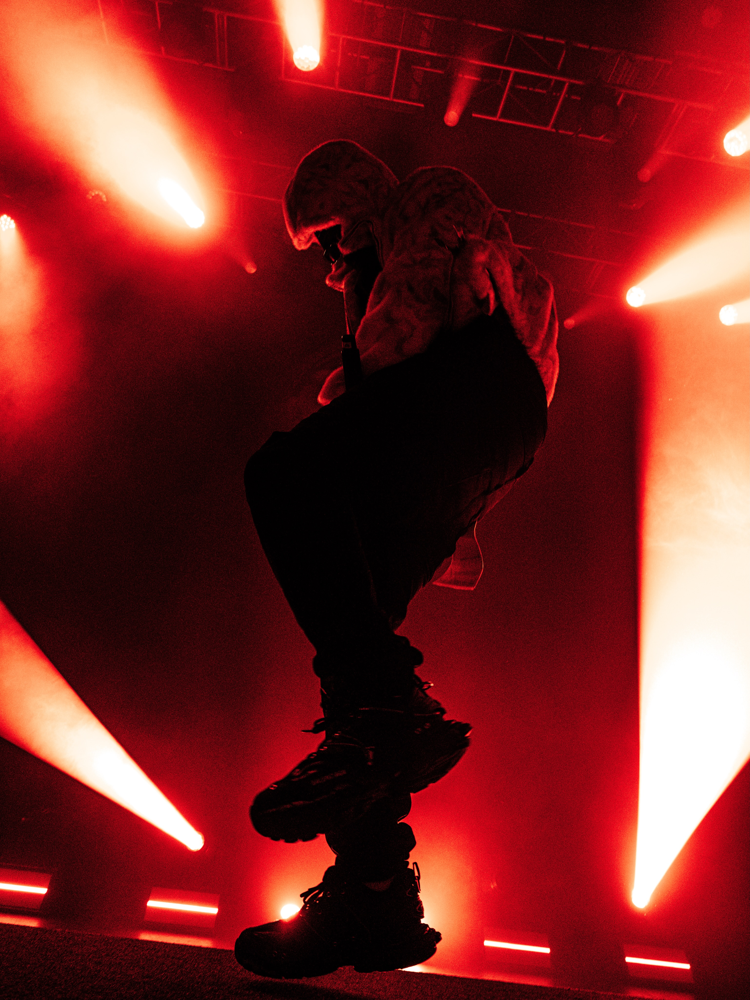
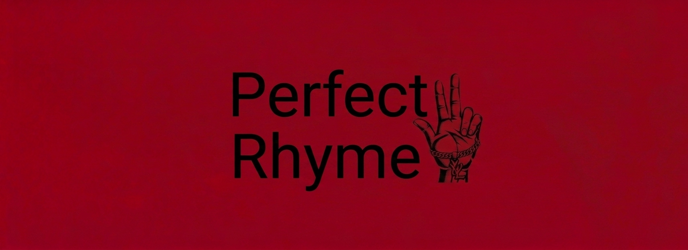
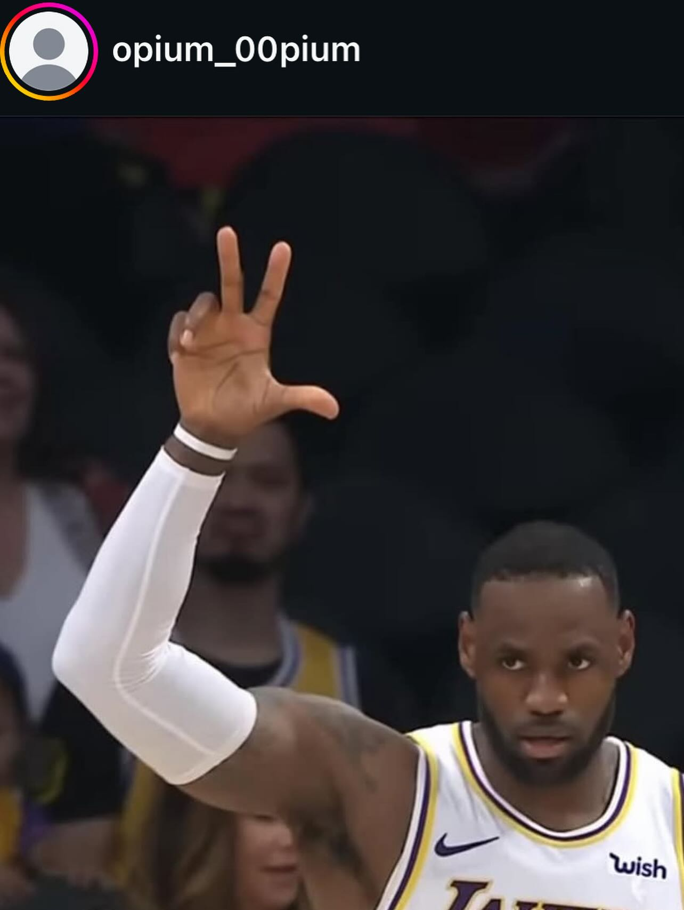
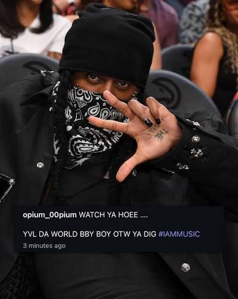
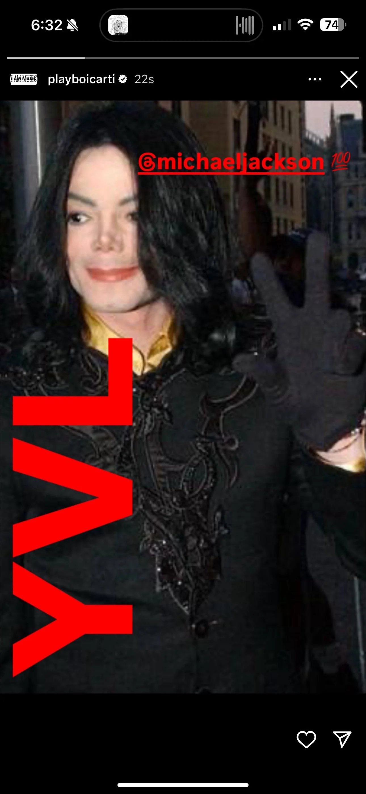

06
Dirección fotográfica
Dos registros conviven en el sistema: el estudio en blanco y negro, frío y editorial; y el rojo de escenario, cálido, borroso, en movimiento. Juntos definen el mundo visual de la marca.



Estudio de identidad de marca
Perfect Rhyme nace de un gesto: tres dedos al aire, una cadena al puño. Un saludo que se repite en cada foto, cada historia, cada tarima — hasta convertirse en firma. La identidad traduce ese gesto callejero en un sistema gráfico disciplinado: rojo sangre sobre negro absoluto, tipografía de cartel y una fotografía que vive entre la sombra y el flash rojo del escenario.
El símbolo de la mano —tres dedos, cadena y colgante— es el punto de partida de todo el sistema. De ahí se desprenden el logotipo, la paleta y el tono fotográfico.
Directa, nocturna, sin adornos. La marca no explica, señala. Cada aplicación reduce el mensaje a lo esencial: el gesto, el rojo, el contraste.
Portadas, mercancía, contenido en vivo y redes sociales comparten una misma gramática visual para que la marca se reconozca en cualquier formato.

El wordmark combina una tipografía humanista de trazo suave con el icono de la mano en señal de tres — reforzado con una cadena y un colgante que ancla la marca a su origen.
Anton
Display · titulares y cartelería
RHYME OF THE STREET
Space Grotesk
Texto · cuerpo, leyendas, UI
Watch ya hoe, YVL da world bby boy otw
El símbolo no vive solo en el logotipo — se repite en la calle, en la cancha, en cada historia publicada. La identidad documenta el gesto donde realmente ocurre.


Dos registros conviven en el sistema: el estudio en blanco y negro, frío y editorial; y el rojo de escenario, cálido, borroso, en movimiento. Juntos definen el mundo visual de la marca.


El sistema se traslada sin fricción al contenido efímero: historias, publicaciones y momentos en vivo, siempre con el mismo tono de voz.

Las historias usan bloques tipográficos diagonales en rojo puro, siempre en Anton, siempre a tamaño de cartel.
Las leyendas mezclan mayúsculas informales con el hashtag de la marca — la voz suena tan callejera como el símbolo se ve.
Cada publicación reafirma el gesto de la mano como firma visual, sin importar el formato.

Gracias por ver